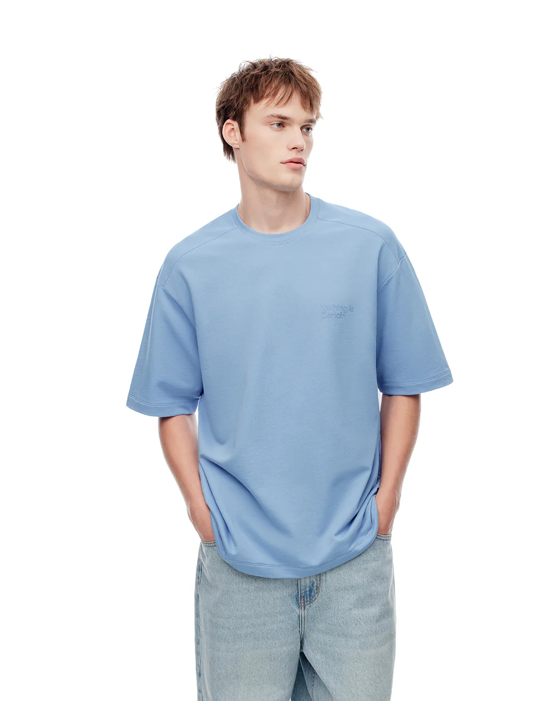
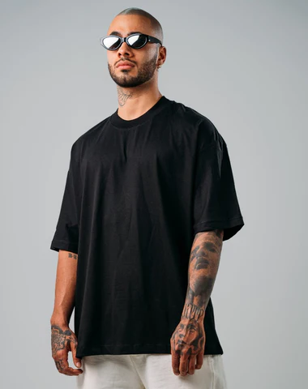
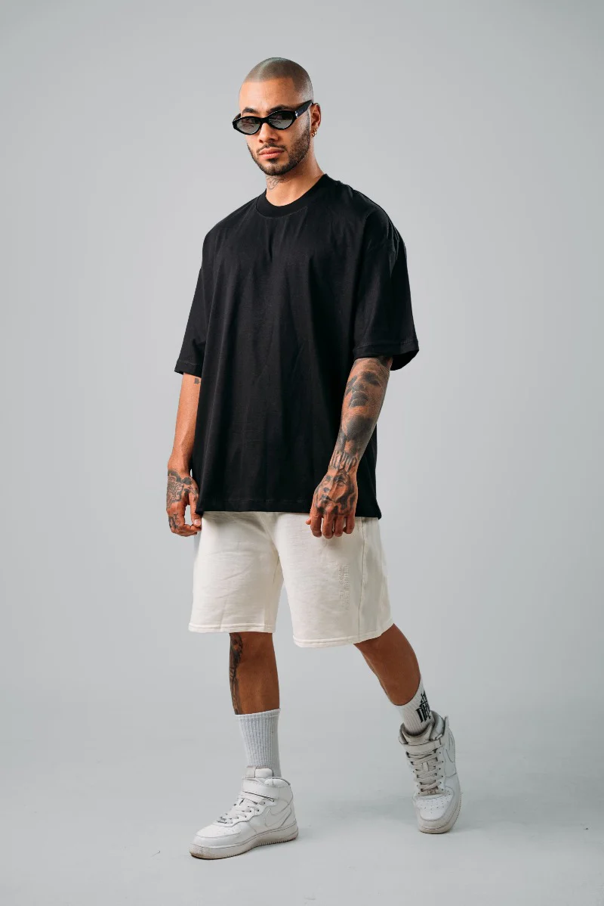

¿Quienes somos?
KODALI no es solo ropa. Es una forma de expresarse sin pedir permiso. Nace desde cero, desde la necesidad de construir algo propio en un mundo donde todo ya parece estar definido. Representa a quienes no encajan, a quienes crean su propio camino y no siguen reglas impuestas. KODALI es identidad, libertad y evolución.
Esencia
KODALI nace como una idea… pero también como una salida. Una forma de transformar lo que somos, lo que vivimos y lo que soñamos en algo real. No venimos de grandes recursos, venimos de ganas, disciplina y visión. Cada diseño lleva una parte del proceso: errores, aprendizajes, momentos difíciles y crecimiento. No es solo una marca. Es algo que se está construyendo desde abajo.



Misión de KODALI:
Crear ropa que represente identidad, libertad y autenticidad, inspirada en la cultura urbana y el anime, para jóvenes que están construyendo su propio camino y quieren expresarse sin seguir normas.
Visión de KODALI:
Convertirse en un movimiento reconocido que trascienda la ropa, construyendo una comunidad global de personas que crean su propio camino desde cero y usan KODALI como símbolo de su identidad.